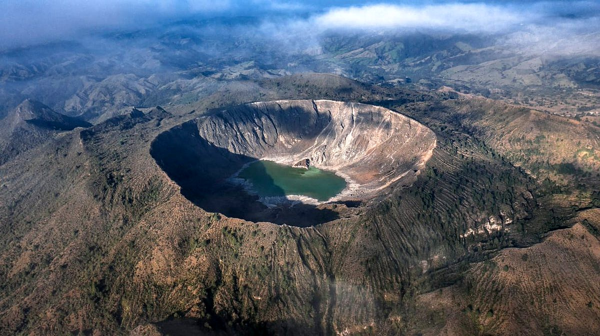

Top 9. El Chichón (1982)

Description
El Chichón, also known as Chichonal, is an active volcano in Francisco León, north-western Chiapas, Mexico. El Chichón is part of a geologic zone known as the Chiapanecan Volcanic Arc. El Chichón is a stratovolcano with a complex of domes with a tuff ring, made of ejected volcanic material, located between the Trans-Mexican Volcanic Belt and the Central America Volcanic Arc. El Chichón erupted in 1982; prior to this, activity had not occurred since c.1360, with a possible eruption c.1850 (not universally agreed on).
El Chichón became famous for its 1982 eruption. In little under a week, the presumed dormant volcano produced three plinian eruptions (March 29, April 3, and April 4). The eruptions released a substantial amount of sulfur dioxide and particulates into the atmosphere. While the total volume of the eruption was much smaller than the famous eruption of Pinatubo in 1991, El Chichón's impacts were equally significant on global climate. El Chichón is often overlooked in comparison to other historic eruptions, yet the 1982 eruptions provide important lessons on preparation for volcanic disasters and the influence volcanoes can have on climate.
Eruption History
The 1982 eruption of El Chichón is the largest volcanic disaster in modern Mexican history. The powerful 1982 explosive eruptions of high-sulfur, anhydrite-bearing magma destroyed the summit lava dome and were accompanied by pyroclastic flows and surges that devastated an area extending about 8 km around the volcano. A total of 9 villages were completely destroyed, killing 1,900 people. A new 1-km-wide, 300-m-deep crater that now contains an acidic crater lake was created. The landscape was covered in ash up to 40 cm in depth. Over 24,000 km2 of countryside was affected,[5] devastating coffee, cocoa, banana crops, and cattle ranches. The eruption caused natural dams to form along the Rio Magdalena river, inducing lahars, which destroyed key infrastructure. The total damage caused by the 1982 eruption is believed to amount to $55 million (equivalent to $132 million in present-day US dollars).